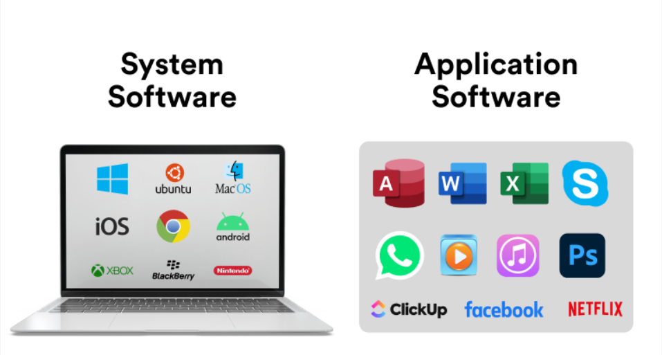
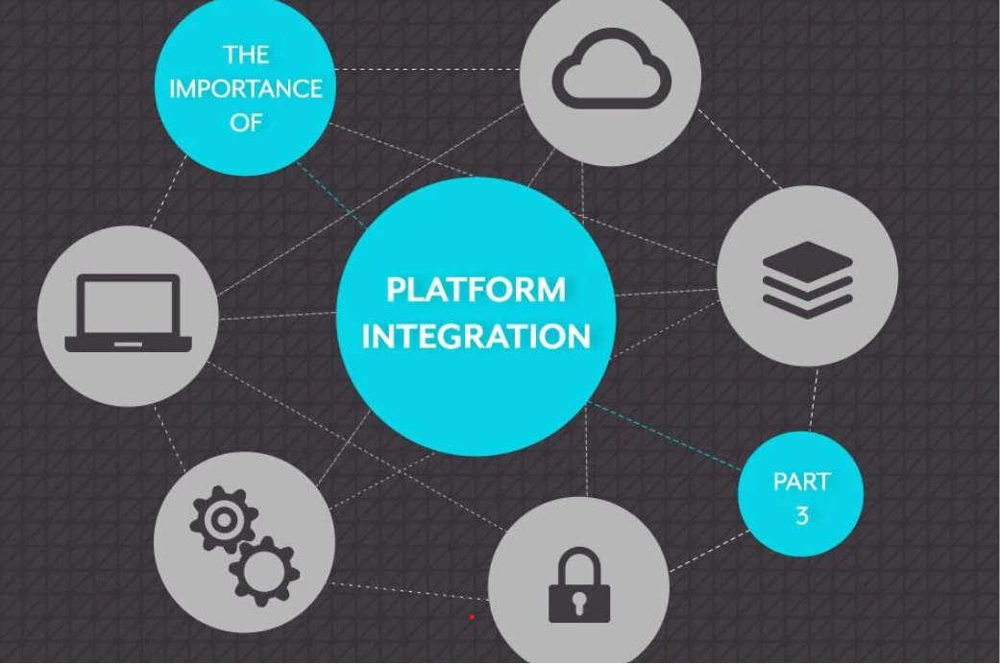

Platform-based development refers to the approach of creating applications, systems, or services using a specific computing platform. This platform provides a predefined environment, including software frameworks, tools, operating systems, and hardware, to streamline and standardize the development process.
Key Features:
Efficiency: Developers reuse existing components instead of building everything from scratch.
Standardization: Ensures consistent design, testing, and deployment.
Scalability: Supports growth by using flexible and expandable platforms.
Faster Time to Market: Reduces development cycle using pre-built libraries and tools..

A platform in software development is the underlying environment that supports the execution and development of applications.
Types of Platforms:
Hardware Platforms: Physical devices like computers, mobile phones, or embedded systems.
Software Platforms: Operating systems or runtime environments (e.g., Windows, Linux, Android).
Application Platforms: Pre-configured development ecosystems (e.g., .NET, Java EE, Node.js).
Cloud Platforms (PaaS): Online environments like Google App Engine, AWS Elastic Beanstalk..
